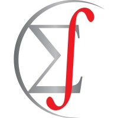

About me
My name is Vinícius. I am a statistician with experience in both technical and management positions.
Professional Experience
[04/2022 - Present] GA + Intergado | Strategy Manager
[01/2021 - 03/2022] GA | Head of R&D
[09/2020 - 12/2020] GA | Head of Data
[10/2018 - 11/2019] Unicesumar | Statistics Professor
[09/2016 - 08/2020] H0 | Data Scientist Consultant and Co-founder
 [07/2013 - 12/2015] Estats Consultoria | Data Analyst and Co-founder
Academic Education
 [2017 - 2019] Master of Science in Biostatistics – State University of Maringá – Brazil – Spatio-temporal geostatistics: modelling of natural phenomena in spacetime
[2017 - 2019] Master of Science in Biostatistics – State University of Maringá – Brazil – Spatio-temporal geostatistics: modelling of natural phenomena in spacetime
 [2013 - 2017] Bachelor of Science in Statistics – State University of Maringá – Brazil
[2013 - 2017] Bachelor of Science in Statistics – State University of Maringá – Brazil
More about me
[2013-2017] Graduation
During my graduate studies I focused mainly on time-series, geostatistics, and data visualization. I received a scholarship for the Brazilian Program of Scientific Initiation (PBIC), which required students to conduct a research and present them in a congress after one year, and I completed two of them:
[2014] Topics on wavelet variance;
[2015] Wavelet multiple cross-correlation.
Besides that I was also a member of the study group of spatial and temporal statistics, having worked with techniques to apply in time series and geostatistics, then I decided to do a final paper about clustering methods for temporal, spatio, and spatio-temporal data.
[2013-2015] Junior enterprise
In addition, I was one of the founders of Estats Consultoria in 2013, a statistics junior enterprise, where I served as Marketing Director and, later, President, for three years.
During projects I also worked as a data analyst, and later as I was a senior in college I helped with the training of the freshmen.
In my last year I decided to enter the regional Junior Enterprises Nucleus, to help create a census.
[2017-2019] Post graduation
I decided to pursue a master’s degree in Biostatistics after graduating in the beginning of 2017. My dissertation was about spatio-temporal geostatistics models, that was a natural choice since I had developed projects on temporal and spatial statistics during graduation, so I decided to unite them.
Also, I assisted one of my advisors in the development of the geotoolsR R package, providing code to apply bootstrap techniques in the context of geostatistics.
Lastly, I chose psychometrics as my optional credit in an applied area.
[2016-2020] Data Science Consultant
In 2016, I co-founded the data consulting firm H0 Consultoria with a partner, where we collaborated on over 350 scientific studies and more than 40 business surveys for corporations. We were responsible for assisting others in making the most of statistics, such as doing:
Sampling design;
Data analysis;
Questionnaire review;
Statistics training.
[2018-2019] Statistics Professor
As I gained notoriety as a consultant, I was invited to teach statistics in the master of business administration program for business intelligence at Unicesumar.
I updated the course topics by changing the material to a more modern and applied concept of statistics; despite the fact that it was only an introduction class, I used my hands-on experience to demonstrate real-world application of theoretical concepts.
[2020-2020] Head of Data
In 2020 I received an invitation to start and grow the data team within GA’s Research & Development (R&D) division in 2020, GA is a Brazilian animal science tech company, that I consulted for some years. My main tasks as Head of Data were:
Hiring data scientists and data engineers;
Establishing a project methodology;
Helping in the overall design of the data architeture;
Starting a data-driven culture within the company.
Also as I learned more about software development, I also created my own R library for various functions to aid in data cleaning and visualization. The library is named relper, and it is available as an open source package to anyone who is interested.
[2021-2022] Head of R&D
Later, in the end of that year, I was given a promotion to lead the whole R&D division in 2021, and as such, I was also in charge of the software development team in addition to the data, my responsabilities were:
Implementing automation projects using robots (Jira Automation), web scraping data (Python/R), and improving data monitoring (Metabase) and data-driven decision-making (Dremio);
Applying agile methodologies and software development concepts in the execution of R&D projects (Jira Software) to drive continuous process improvement;
Managing the department’s budget and expenses while analyzing and reporting on key performance indicators and project outcomes to the board of directors;
Building project teams, developing schedules, and setting goals to meet overall needs.
[2022-2023] Strategy Manager
In order to offer better actions through data science, GA merged with Intergado in 2022, a company that makes hardware for accurately automating data collection, such as individual animal weight.
As the company’s new strategy manager, my current responsibilities are:
Managing the implementation of corporate strategy across all products;
Keeping track of project status and identifying risks;
Coordinating between technical and non-technical teams to align priorities and goals.